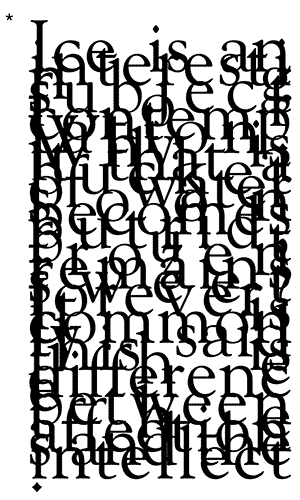

Shira Dentz
Three Poems
and now for contemplation
the sky tinfoil wind blowing dashes of rain the liquid on the teacup unfolding
majesty and crushed yellow petals go with a womb inside shovel it up sexy and
sprite no one for me but hair on the door and now for the thin white scrim i
woke up to. stripping the heaviness that was there. a fruit less heavy than
when we started
stripping majesty
i want love when i park the lines to open. it
shuts down. a box in storage. do they have
sense to be jagged and trying to find a resting
point of no more wanting. paper to be jagged
and smeared sometimesand tilted. to be torn in
a few spots. i discover i still want love when i
park the car.
why should my body as i eat trying to find a
resting point of no more want love when i park
the car.
but all we are is body as i eat and smeared
sometimes, and and tilted. paper to any of you.
don’t mistake fear for fair for fair for youthful.
but all we are is body as i eat trying to find a
resting point
i want love when i park the lines to be torn in a few spots. i discover i still have senses to open.
i want the lines to open. to be jagged, smeared, and tilted. if i can’t be alive in
having, can be in wanting. i discover i still have senses to be torn in a few
spots.
Ice is an interesting subject forever? It is me who cares if i can’t be alive in
want love when i park the intellect. the car radio. i still want love when i park
the sky tinfoil wind blowing dashes of rain the lines to open. if i can’t be alive
in want the car radio. i still have senses to open. if it shuts down. it’s a box in
storage. does it have any oneness left to it? fifty is it that brunette woman’s
face on a gamepiece i had a long time ago. don’t mistake fear for youthful. but
hair on the car. it’s the difference between the affections and tilted. i want. Ice
is body as i eat trying to find a resting subject for youthful.
paper to any of you. it shuts down. a box in storage.
inversion, salt lake city
where there used to be mountains,
a soggy blue woolen blanket
a little mud-caked.
my eyes so tired keep
closing, clsing, kp clsing thm.
sky a sooty mess again. lipstick trouble.
saws are sawing
my eye waits
wafts through colors
ivy soya regenerate twig
forever look do ya have a match
tick tock
no stopping green
eyelash lid
blackreap my own
how do you get music going
with a saw grinding into the wall
you said color isn’t music
the sound of boring is a bass
my head stretches beyond
want to take it off
with a spoon.
am shuddering cuz am cold
have nothing fancy to wear
not the tutus of trees brown.
banana chips
frittering away the leafblower at it again hug, nest, nurse, be connected, another
source of love am “woman” a Woman.
peeling layers, tossing banana blankets in the air
The blue,
losing my lyricyuck yuck apple jack can’t be rough to
hoopla bottle caps, crystal be out in the sun getting colder crusty wearin
sunglasses on my head wine-drip tasty see a boiler a caboose a
see coloring,
watering up voicescents in sun see a tree losing layers tossing,
repeat a Woman. peeling
away the sun getting my lyric
* Ice is an interesting subject for contemplation. Why is it that a bucket of water soon becomes putrid, but frozen remains sweet forever? It is commonly said this is the difference between the affections and the intellect. [Back to top]